300 вопросов о цигун. Секреты китайской медицины. Содержание
Основы комплекса "стоять как столб" восходят к боевым стойкам древнего тренировочного комплекса "кулак Великого совершенства". Комплекс стоек состоит из двух частей, первая из которых называется "стойка взращивания жизни", вторая - "стойка искусного удара". Ниже приводится разъяснение методов комплекса "стойка взращивания жизни". Название этого комплекса связано с уподоблением дереву, глубоко пустившему корни в землю. При его выполнении стойка должна быть устойчивой и неподвижной. Одним из правил комплекса является постепенное укрепление и развитие мощи организма; он используется для укрепления здоровья и в лечебных целях. Комплекс выполняется в положении стоя и не требует специальной тренировочной площадки или какого-либо тренировочного оборудования; им можно заниматься в любое время, в любом месте. Поэтому начиная с древности он был широко распространенным и почитаемым у китайского народа методом лечения заболеваний. Особенностями его являются простота движений, быстрое получение результатов, ярко выраженный терапевтический эффект при лечении таких хронических заболеваний, как неврозы, функциональные расстройства нервной системы, гастроэнтерит, болезни сердца и венечных артерий, а также при физической ослабленности организма, переохлаждении конечностей и т.д.
1. Позы. Стойки имеют множество вариантов в зависимости от школ, но все их можно подразделить на следующие четыре вида: естественная стойка, стойка трех кругов, стойка с давлением книзу и комбинированная стойка. По степени сложности можно выделить три типа стоек: высокая, средняя и низкая. При положении в высокой стойке колени слегка согнуты, затраты сил относительно невелики, она подходит людям преклонного возраста с ослабленным здоровьем. Средняя стойка - промежуточная, угол сгиба коленей примерно 130°, физические усилия несколько больше. Эта поза может быть рекомендована больным с относительно хорошим физическим развитием. При низкой стойке колени согнуты почти под прямым углом, при этом требуется большая затрата сил, рекомендуется физически крепким или восстановившим свое здоровье людям.
Естественная стойка: ступни поставлены параллельно на ширину плеч, голову и шею держат прямо, грудь слегка расправлена - не слишком распрямлена, но и не слишком вогнута, колени слегка согнуты, правая рука лежит поверх левой, ладони обращены вовнутрь и лежат на нижней части живота, глаза смотрят прямо вперед или слегка вниз (рис. 4).
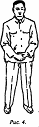
Стойка трех кругов бывает двух видов - "обхватывание мяча" и "обнимание мяча", которые различаются по степени изгиба руки: если изгиб невелик, то позу называют "обхватывание мяча", если изгиб большой - "обнимание мяча" (рис. 5, 6).
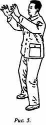
_____________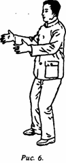
При выполнении движений в стойке "обхватывание мяча" пальцы как бы охватывают полусферу - так, как если бы вы в руках держали мяч, - ладони и пальцы расположены друг против друга на расстоянии примерно одного чи прямо перед глазами. Глаза смотрят прямо или слегка вниз. В стойке "обнимание мяча" руки как бы обхватывают ствол дерева, ладони обращены вовнутрь, находятся на расстоянии примерно двух чи перед грудью. Глаза смотрят прямо или немного вниз. Выбор тренировочной стойки - высокой, средней или низкой - можно делать в зависимости от индивидуальных особенностей человека.
Стойка с давлением книзу: обе руки согнуты в локтях, пальцы направлены вперед, при этом руки от кисти до локтя параллельно земле, ладони обращены вниз, все пальцы раздвинуты, как будто что-то прижимают книзу. В зависимости от индивидуальных особенностей можно выбрать высокую, среднюю или низкую стойку (рис. 7-9).
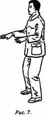
___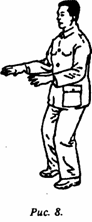
___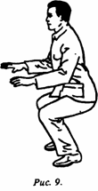
Комбинированная стойка:
1) обе руки свободно свисают вдоль тела, ноги стоят прямо на ширине плеч, верхняя часть корпуса прямая, голова поставлена прямо, глаза смотрят прямо перед собой, губы и зубы сомкнуты, спина расправлена, грудь слегка вогнута, плечи опущены, ладони обращены вовнутрь, бедра выровнены, мышцы всего тела расслаблены (рис. 10);
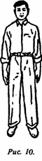
2) "летящий дракон вытягивается" - выполняется на основе первой позы. Голова шея, грудь, живот неподвижны, обе руки вытянуты вперед ладонями вниз, пальцы прижаты друг к другу, кисти расслаблены и слегка свисают, образуя полусферы. Одновременно с вытягиванием вперед рук ноги слегка сгибаются в коленях, угол сгиба коленных суставов примерно 120° (рис. 11);
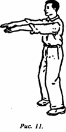
3) "благоприятное противопоставление ладоней" - выполняется на основе второй позы. Голова, шея, грудь, живот также неподвижны, вытянутые прямо вперед ладони обращены друг к другу (рис. 12);
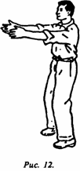
4) "головка голубя перед грудью" - выполняется на основе третьей позы. Голова, шея, грудь, живот, ноги также неподвижны, согнутые в локтях руки с обращенными вниз ладонями находятся на одном уровне спереди, у груди. Средние пальцы обеих рук слегка соприкасаются, ладони образуют полусферы (рис. 13);
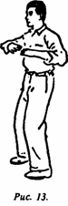
5) "парить с расправленными крыльями" - на основе четвертой позы, где голова, шея, грудь, живот, бедра, ноги также неподвижны) руки, сведенные перед грудью, разводят по сторонам, ладони и руки находятся на одном уровне с плечами, ладони обращены вниз (рис. 14);
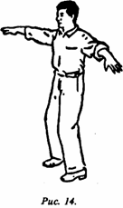
6) "оказывать давление вниз перед грудью" - на основе пятой позы. Голова, шея, грудь, живот, бедра, ноги также неподвижны, обе руки выпрямлены, вытянуты вперед и вниз, ладони обращены вниз и находятся примерно в 30 см от коленных суставов (рис. 15).
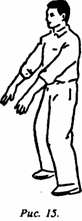
В конце занятия повторяют позу, изображенную на рис. 10.
Ноги стоят прямо примерно 3 мин, затем руки с повернутыми вверх ладонями поднимаются на уровень груди, одновременно с этим делается вдох, ладони поворачиваются вниз, с плавным нажимом опускаются; одновременно делается выдох, затем вновь - на вдохе - руки поднимаются на уровень груди; при плавном жиме вниз делается выдох. Упражнение выполняют три раза, затем заканчивают.
Все вышеописанные упражнения необходимо делать с учетом физического состояния, а значит, индивидуально определять длительность учебных занятий и выбирать конкретную позицию (высокую, среднюю или низкую). Если физическое состояние начавшего обучаться слабое, то глубокое приседание будет трудно выполнить. В этом случае подойдет или легкий сгиб в коленях, или же прямая стойка.
По мере укрепления здоровья можно перейти от прямой стойки к легкому сгибанию коленей, а затем и к глубокому; время выполнения каждого упражнения может быть постепенно увеличено от 1 до 10 мин. А общее время занятия может увеличиваться от 10 мин примерно до 1 ч.
Важные моменты комплекса стоек ("стоять как столб"):
обе стопы должны стоять прямо на ширине плеч; верхняя часть корпуса должна быть прямой, голову надо держать прямо; смотреть следует прямо перед собой; губы и зубы должны быть сомкнуты; следует втянуть грудь и распрямить спину, опустить плечи, чтобы локти свешивались; шея не должна быть нагружена, но макушка должна быть напряжена; мышцы всего тела должны быть расслаблены. При сгибании коленей проекция коленного сустава не должна выходить за носок обуви.
2. Дыхание.
1. Естественное дыхание, т.е. привычное дыхание с естественным ритмом используется на начальном этапе занятий.
2. Брюшное дыхание: при вдохе живот либо надувается, либо втягивается вовнутрь; при выдохе живот втягивается вовнутрь или же надувается. При брюшном дыхании необходимо обратить внимание на то, чтобы оно было медленным, тонким, глубоким и долгим, лучше всего выполнять его под руководством преподавателя.
3. Способ дыхания "перемещать ци от даньтяня к точкам юн-цюань": на вдохе с помощью сосредоточения постепенно перемещают все ци внутри и вне тела в область даньтяня; на выдохе перемещают ци даньтяня вниз к находящимся на стопах точкам юн-цюань. Затем вновь делают вдох и перемещают ци вверх из точек юн-цюань в область даньтяня, а во время выдоха ци из даньтяня перемещают вниз к точкам юн-цюань. При дыхании следует обращать внимание на то, чтобы оно было мягким, естественным, без каких-либо усилий.
3. Медитация.
1. Метод размышления о приятном (концентрация на благих сущностях). При занятиях статическая концентрация не требуется, можно размышлять о легких и приятных вещах, например думать об успешной работе; можно также представить себе свежий простор обширных полей, думать о цветах в парке и т.п. Главное - отбросить мысли о страхе, ужасе, безрадостных вещах. Это метод, применяемый как новичками, так и опытными мастерами цигуна.
2. Метод концентрации на жизненных точках. Во время занятий можно концентрироваться на даньтяне, можно также концентрироваться на точках юн-цюань и других.
3. Метод проникающего ци. Чередуют перемещение ци при вдохе и выдохе, при этом не используют концентрацию на жизненных точках, как в предыдущем способе, а мысленно сопровождают ци, как это делают в способе перемещения ци из даньтяня к точкам юн-цюань.
4. Способ "собирания воздействий" (шоугун):
1. Ноги ставят .прямо, одновременно руки поднимают вверх. Ладони обращены вверх, пальцы обращены друг к другу, при этом выполняется вдох; но когда ладони поднимают до уровня горла, их поворачивают вниз и начинают как бы что-то прижимать ими, при этом делается выдох. Упражнение выполняется три раза.
2. Ставя ноги прямо, одновременно руки поднимают вверх, при этом ладони повернуты вверх, пальцы обращены друг к другу; когда ладони поднимают до уровня горла, их поворачивают тыльной стороной к голове; затем ладони поднимают до темени, при этом они обращены вверх, одновременно делают вдох; ладони поворачивают вниз, опускают до уровня живота, одновременно делают выдох.
После "собирания воздействий" можно растереть ладони до появления жара, рекомендуется также 20 раз проделать массирующие движения для головы и лица (как при умывании); эффект будет еще лучше.
5. Важные моменты.
1. Все виды упражнений должны выполняться точно, чтобы было ощущение комфорта, шею не нужно держать слишком прямо, плечи поднимать, грудь нельзя слишком распрямлять, верхнюю часть тела не нужно слишком наклонять вперед, назад или сгибать в пояснице. В стойке "стоять как столб" проекция коленного сустава не должна выходить за носки. Если появляется ощущение, что выбранная позиция не очень комфортная и правильная, то необходимо своевременно исправить ошибки.
2. Во время занятий с самого начала следует обратить внимание на расслабление; лучше всего, если на лице будет легкая улыбка; не должно быть тревожных мыслей; нельзя стремиться к разнообразным ощущениям во время занятий.
3. Начинающие обучение и страдающие тяжелыми заболеваниями на первых этапах применяют метод концентрации на благих сущностях и метод естественного дыхания, а также высокую стойку с давлением книзу.
4. Во время занятий необходимо от начала до конца соблюдать какую-то одну выбранную стойку, нельзя выполнять произвольные движения или элементы из других стоек (за исключением метода самодвижений).
5. Если во время занятий в какой-либо части тела возникнут ощущения жара, онемения, появится дрожание мышц и др., особенно в стойке "стоять как столб", или обнаружатся дрожание пальцев и мелкая дрожь в ногах при выполнении упражнений, многократных приседаний и вставаний, то не следует тревожиться. Это обычное явление при тренировках, надо относиться к нему спокойно. Не надо увеличивать нагрузку, но и не следует предаваться страху.
6. Во время занятий может обнаружиться, что одно плечо горячее, а другое холодное, даже все тело может быть наполовину горячим, наполовину холодным. Причина в несбалансированности потоков ци и крови, это можно преодолеть продолжением занятий. Но если вдруг обнаружится, что все тело холодное или даже на миг задрожало от холода, то надо немедленно прекратить занятие, омыть теплой водой руки и лицо. Продолжить занятия можно только на следующий день.
7. Если дует сильный ветер, заниматься нельзя; если несильный - можно. Помещение для занятий нужно проветривать.
8. Нельзя приступать к занятиям натощак, нельзя заниматься в течение 30 мин после приема пищи. Нельзя также заниматься в положении стоя, если организм сильно утомился, можно временно использовать позу сидя или лежа.
9. Если во время занятий начинается потовыделение, это хороший признак. Но нельзя сразу же охлаждаться на ветру, категорически недопустимо пить или обливаться холодной водой. Это можно делать только после отдыха. Если условия позволяют, то лучше всего после занятий выпить горячий напиток и обмыться теплой водой.
10. Необходимо обращать внимание на правильность выполнения стоек в упражнении "собирание воздействий", кроме того следует следить за очередностью и постепенностью их исполнения.
_____
Стоики имеют множество вариантов. - Одна из наиболее популярных стоек - "стойка лошадиного шага" (или, понятнее, "стойка в позе всадника"), близкая к описанной в ответе на данный вопрос "стойке с давление книзу". Она используется во многих школах ушу и цигуна в качестве важнейшего элемента тренировочного комплекса, а также может применяться как самостоятельный вид цигуна. (Подробное описание см.: Цииь Цифэн. Шалоиньский Ма Бу Чжуан Гун // Китайский цигун. - Новосибирск, 1991). Данная стойка может использоваться не только для самолечения таких болезней, как расстройство нервной системы, артрит, стенокардия, склероз коронарных сосудов, гипертония и т.д., но и для продуцирования "внешнего ци" для последующего терапевтического применения (см.: Ван Жуйтин. Основы шаолиньской системы цигун "созерцание внутренней энергии одного пальца" (нэйцзинь и чжи чань) // ЦиС. - 1993. - № 1).
300 вопросов о цигун. Секреты китайской медицины. Содержание